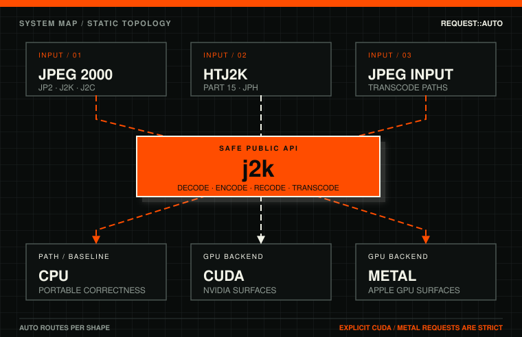

Use the public crate
Application code should start with the `j2k` facade crate for JPEG 2000 / HTJ2K inspect, decode, encode, and recode APIs.
cargo add j2k
Rust image codec workspace
J2K provides JPEG 2000 / HTJ2K inspect, decode, encode, recode, and JPEG-to-J2K/HTJ2K transcode APIs for Rust, with optional CUDA and Apple Metal GPU adapter crates for supported paths.

Application code should start with the `j2k` facade crate for JPEG 2000 / HTJ2K inspect, decode, encode, and recode APIs.
cargo add j2k
CUDA and Metal crates provide device-specific integration for supported decode, encode-stage, and transcode routes.
cargo add j2k-cuda --features cuda-runtime cargo add j2k-metal
`j2k-transcode` owns JPEG-to-J2K/HTJ2K primitives, with CUDA and Metal adapter crates for supported stage acceleration.
cargo add j2k-transcode
Decode, encode, JP2/J2K codestream handling, and crate selection.
Backend posture, CPU fallback, CUDA, Metal, and strict device requests.
NVIDIA CUDA adapter crates and runtime feature boundaries.
Apple Metal adapter crates for macOS GPU-backed paths.
High-throughput JPEG 2000 APIs, recode, and transcode routes.
Submit this sitemap in Google Search Console after site verification.
CPU remains the portable correctness baseline. `BackendRequest::Auto` may return CPU output when a device path is unavailable, unsupported, or not benchmarked for a requested shape. Explicit CUDA and Metal requests are strict and return errors for unsupported shapes instead of silently changing backend.
Published GPU performance claims should cite host hardware, operating system, input source, exact command, comparator availability, and comparator versions.